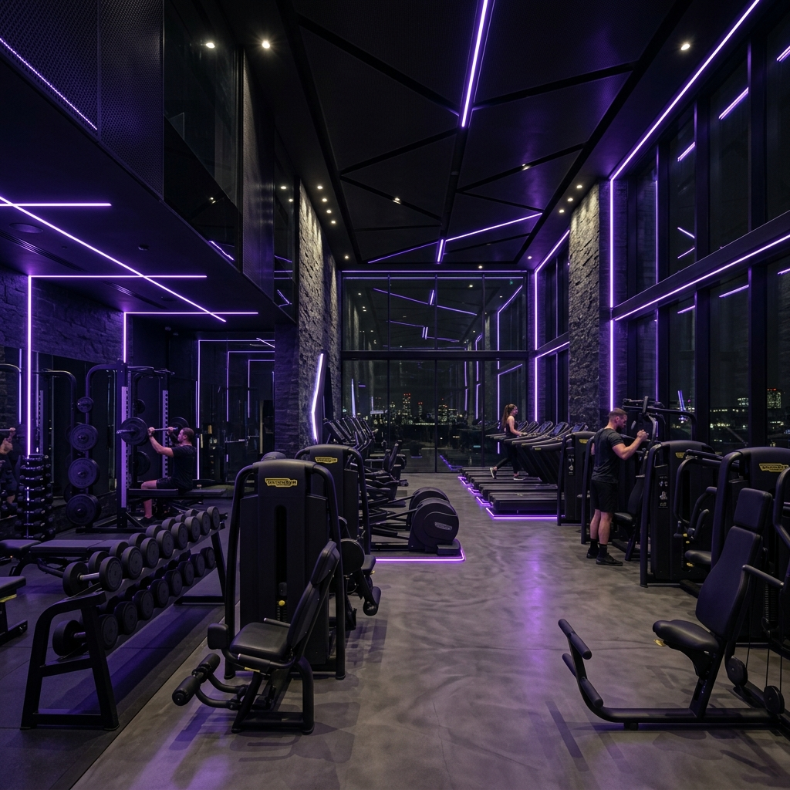

Academia comum
- 30 a 50+ alunos por professor
- Treino pouco acompanhado
- Filas em horários de pico
- Ambiente cheio e impessoal
- Vestiário básico
- Pouca previsibilidade
A Quadros Gym une a estrutura completa de uma academia premium ao acompanhamento próximo de um estúdio de personal. Sem superlotação, sem improviso e sem perder tempo esperando aparelho.
Vagas limitadas por horário para manter o padrão de acompanhamento.
Academia comum até parece resolver. Você se matricula, recebe uma ficha, tenta manter constância e, quando percebe, está treinando sozinho em um ambiente cheio, esperando aparelho e sem saber se está executando certo.
Para quem tem rotina intensa, isso não funciona. O treino precisa ser objetivo, acompanhado e compatível com o seu tempo.
Em academias convencionais, você encontra estrutura, mas perde atenção. Em estúdios pequenos, você encontra acompanhamento, mas muitas vezes perde variedade de equipamentos.
A Quadros Gym foi criada para unir os dois mundos: estrutura premium, equipamentos de alto padrão, acompanhamento próximo e uma rotina organizada por horários.
Você não precisa escolher entre estrutura e atenção.
Na Quadros, você tem os dois.
Entendemos sua rotina, objetivo, histórico e disponibilidade antes de montar qualquer treino.
Seu treino é pensado para sua meta: hipertrofia, emagrecimento, saúde, condicionamento ou longevidade.
Você treina em horários controlados, evitando superlotação e espera por aparelho.
Com no máximo 3 alunos por professor, há mais correção, atenção e ajuste em cada série.
O treino é acompanhado e ajustado conforme sua evolução, sem estagnar na mesma ficha.
A experiência não termina no treino. Da escolha dos equipamentos aos vestiários, cada detalhe foi pensado para uma rotina mais confortável, organizada e eficiente.
Máquinas de tecnologia italiana, selecionadas para entregar ergonomia, segurança e precisão de movimento.
Toalhas limpas, amenities de banho e estrutura confortável para antes e depois do treino.
Fluxo limitado por horário e climatização para preservar a experiência e o acompanhamento.
Na Av. Sete de Setembro, próximo à Praça do Japão, em uma das regiões mais valorizadas de Curitiba.
A Quadros foi desenhada para encaixar na rotina de quem não pode perder tempo. Você agenda seu horário, chega sabendo que será acompanhado, treina em um ambiente organizado e sai com a sensação de que cada minuto foi bem usado.
Responda 3 perguntas rápidas e veja qual perfil de treino combina melhor com a sua rotina.
Seu perfil combina com um método de treino acompanhado, com horário marcado e fluxo controlado. Na Quadros Gym, você treina com mais direção, conforto e previsibilidade.
Garanta sua vaga no horário ideal. Inicie a matrícula online e a equipe entra em contato para organizar seu primeiro treino.
Iniciar matrícula onlineA proposta da Quadros é manter padrão. Por isso, os horários são controlados e as vagas por turma são limitadas.

Para o cliente: adicione aqui depoimentos reais de alunos, avaliações do Google, fotos do espaço, número de alunos atendidos, tempo de mercado e credenciais dos professores. Prova real é o que mais aumenta a conversão — nada de números inventados.
Ver o espaço no InstagramA Quadros Gym está na Av. Sete de Setembro, 4995, em uma região estratégica para quem mora ou trabalha no Batel, Água Verde, Bigorrilho, Centro e arredores.
Batel / Água Verde, Curitiba — PR, 80240-000
Não. A Quadros une estrutura de academia premium com acompanhamento próximo e horário marcado. O objetivo é evitar superlotação e garantir mais atenção durante o treino.
Não. O treino é ajustado ao seu nível, objetivo e histórico. A proposta é justamente dar direção para quem não quer treinar no improviso.
Sim. Esse limite existe para preservar o padrão de acompanhamento e evitar que o aluno se sinta sozinho no treino.
Você agenda o melhor horário disponível e treina dentro de um fluxo controlado. Isso ajuda a manter organização, conforto e acompanhamento.
Sim. O treino pode ser planejado para emagrecimento, hipertrofia, condicionamento, saúde ou retorno à rotina de exercícios.
Sim. A estrutura conta com vestiários premium, toalhas limpas e amenities de banho para mais conforto antes e depois do treino.
Sim. Você pode iniciar sua matrícula pelo link oficial da Tecnofit e depois seguir com a orientação da equipe.
Sim. O ideal é falar com a equipe para entender disponibilidade de horários, planos e funcionamento.
A proposta é diferente. Em vez de competir por preço, a Quadros entrega acompanhamento próximo, ambiente controlado e estrutura premium. É para quem valoriza tempo, conforto e direção no treino.
Na Av. Sete de Setembro, 4995, região Batel / Água Verde, próximo à Praça do Japão, em Curitiba.
Depende do plano, objetivo e disponibilidade de horários. A equipe pode orientar o melhor formato para sua rotina.
Clique em "Reservar minha matrícula" ou fale com a equipe. O primeiro passo é verificar disponibilidade e escolher o melhor horário para seu perfil.
Conheça uma academia onde cada horário é controlado, cada treino tem direção e cada detalhe foi pensado para quem exige mais da própria rotina.
As vagas são limitadas por horário para manter o padrão de acompanhamento.